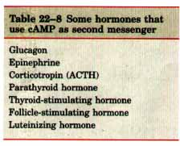
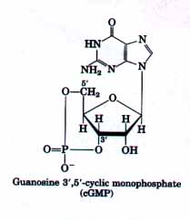
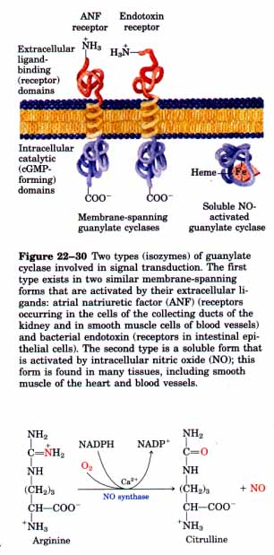
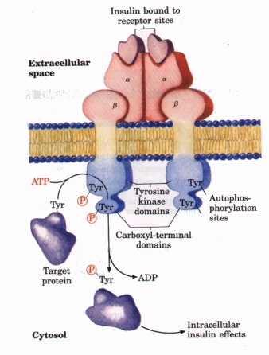
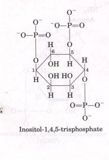
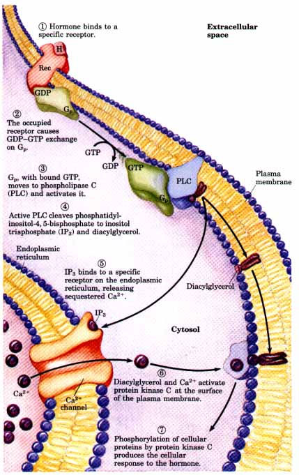
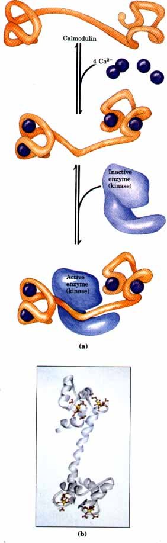

| Epinephrine is only one of a variety of
hormones, growth factors, and other regulatory molecules
that act by changing the intracellular level of cAMP and
thus the activity of cAMP-dependent protein kinase (Table
22-8). Glucagon binds to its own receptors in the plasma
membranes of adipocytes, activating (via a Gs protein)
adenylate cyclase. Cyclic AMP-dependent protein kinase,
stimulated by the resulting rise in cAMP, phosphorylates
and activates triacylglycerol lipase, leading to the
mobilization of fatty acids. The peptide hormone ACTH,
produced by the anterior pituitary, binds to specific
receptors in the adrenal cortex, activating adenylate
cyclase and raising the intracellular cAMP concentration.
Cyclic AMP-dependent protein kinase then phosphorylates
and activates several of the enzymes required for the
synthesis of cortisone and other steroid hormones. Some hormones act by inhibiting adenylate cyclase, lowering cAMP levels and suppressing protein phosphorylation. When somatostatin, for example, binds to its specific receptor, an inhibitory G protein, or Gi, which is structurally homologous to Gs, is activated. Gi inhibits adenylate cyclase and lowers the concentration of cAMP. Somatostatin therefore counterbalances the effects of glucagon. In adipose tissue, prostaglandin El (PGE1) (see Fig. 9-17) inhibits adenylate cyclase, lowering the cAMP concentration and slowing the mobilization of lipid reserves triggered by epinephrine and glucagon. In certain other tissues, PGEI stimulates cAMP synthesis because its receptors are coupled to adenylate cyclase through α2 stimulatory G protein, Gs. In tissues with α2-adrenergic receptors, epinephrine lowers the cAMP concentration, because the α2 receptors are coupled to adenylate cyclase through an inhibitory G protein. In short, an extracellular signal such as epinephrine or PGE1 can have quite different effects on different tissues or cell types, depending upon (1) the type of receptors, (2) the type of G protein (Gs or Gi) with which the receptor is coupled, and (3) the set of enzymes susceptible to phosphorylation by cAMPdependent protein kinase in each cell type. |
 |
| Another cyclic nucleotide, guanosine
3',5'-cyclic monophosphate (cyclic
GMP or cGMP), functions as a
second messenger in certain cells, including those of the
intestinal lining, heart, blood vessels, brain, and the
collecting ducts of the kidneys. The message carried by
cGMP varies with the tissue in which it acts: in the
kidney and intestine it leads to changes in ion transport
and water retention; in cardiac (smooth) muscle it
signals relaxation; in brain it may be involved both in
development and in adult brain function. At least two
isozymes of guanylate cyclase produce
cGMP from GTP in a reaction analogous to that catalyzed
by adenylate cyclase: GTP A similar receptor-guanylate cyclase in the plasma membrane of intestinal epithelial cells is activated by a heat-stable bacterial endotoxin (a small peptide) produced by E. coli (Fig. 22-30). The resulting elevation in cGMP causes decreased reabsorption of water by the intestinal epithelium, producing the diarrhea characteristic of this toxin's action. A second and distinctly different isozyme of guanylate cyclase is a cytosolic protein with a tightly associated heme group (Fig. 22-30). This enzyme is activated by its natural ligand nitric oxide (NO), and by several nitrovasodilators-compounds such as nitroglycerin and nitroprusside-used in the treatment of heart disease. The nitrovasodilators spontaneously break down, yielding NO.
Nitroglycerin |

 |
Nitric oxide is produced from arginine by a Ca2+-dependent mixedfunction oxidase (see Box 20-1), NO synthase, present in many mammalian tissues. NO diffuses from its cell of origin into nearby cells, where it binds to the heme group of guanylate cyclase and activates that enzyme to produce cGMP. In heart, cGMP brings about less forceful contractions by stimulating the ion pump(s) that maintain a low cytosolic Ca2+ concentration. This relaxation of the heart muscle is the same response brought about by nitroglycerin tablets taken to relieve angina, the pain caused by contraction of a heart deprived of O2 because of blocked coronary arteries.
Nitric oxide is unstable and its action is brief; within seconds of its formation, NO undergoes oxidation to nitrite or nitrate. Because it is only slowly converted to NO, nitroglycerin produces long-lasting relaxation of cardiac muscle.
Most of the actions of cGMP are believed to be mediated by cGMPdependent protein kinase, also called protein kinase G. This enzyme is widely distributed among eukaryotic organisms; certain mammalian tissues, including smooth muscle and brain, are enriched for the enzyme. It contains both catalytic and regulatory domains on a single polypeptide (Mr ≈ 80,000). The catalytic domain contains sequences homologous with those of the C subunit of cAMP-dependent protein kinase (protein kinase A), and the regulatory domain resembles the R subunit of the cAMP-dependent enzyme (Fig. 22-28). Binding of cGMP to protein kinase G forces an autoinhibitory domain out of the substrate binding site, allowing the enzyme to phosphorylate proteins that contain Ser or Thr residues surrounded by the appropriate consensus sequence. Protein kinases A and G recognize different consensus sequences and therefore regulate different proteins.
| The receptor for insulin is itself a
protein kinase, which transfers a phosphate group from
ATP to the hydroxyl group of Tyr residues (not Ser or
Thr; Fig. 22-29). The insulin receptor has two identical
a chains that protrude from the outer face of the plasma
membrane, and two transmembrane β subunits, with their
carboxyl termini on the cytosolic face (Fig. 22-31). The
a chains contain the insulin-binding domain, and the β
chains have the tyrosine kinase domain. Insulin binding to the a chains activates the tyrosine kinase activity of the β chains. The enzyme first phosphorylates itself on critical Tyr residues in the β chain (Fig. 22-31), and this autophosphorylation activates the enzyme to phosphorylate other proteins of the membrane or cytosol. Although the detailed sequence of events that follows stimulation by insulin has not been fully established, it appears likely that the binding of insulin to its receptor starts a cascade of protein phosphorylations in which the insulin receptor (a tyrosine kinase) activates a second protein kinase, which may then activate a third, serine or threonine kinase. Eventually, phosphorylation of Ser or Thr residues alters the activity of one or more enzymes crucial to some aspect of cellular function; insulin has hit its target(s). Individuals with "insulin-resistant" diabetes (NIDDM; p. 760) secrete insulin normally, but their tissues do not respond to their own insulin or to injected insulin. In some of these people there is a mutation in the tyrosine kinase domain of the insulin receptor. Insulin binds normally to the mutant receptor, but the tyrosine kinase is inactive and the downstream consequences of insulin binding do not occur. |
 Figure 22-31 The insulin receptor consists of two α chains located on the outer face of the plasma membrane and two β chains that traverse the membrane and protrude on the cytosolic face. Binding of insulin to the α chains triggers autophosphorylation of Tyr residues in the carboxyl-terminal domain of the β subunits, which allows the tyrosine kinase domain to catalyze phosphorylation of other target proteins.
|
The insulin receptor is the prototype of a variety of other hormone and growth-factor receptors, all of which resemble it in structure and have tyrosine kinase activity. The receptors for epidermal growth factor (EGF) and platelet-derived growth factor (PDGF), for example, show structural and sequence homologies with the insulin receptor, and both receptors have a tyrosine kinase activity in their intracellular, carboxyl-terminal domains.
| A third class of signal receptors are
coupled, through a G protein, to a plasma membrane phospholipase
C specific for the plasma membrane lipid phosphatidylinositol-4,5-bisphosphate
(see Fig. 9-16). This hormone-sensitive enzyme catalyzes
the formation of two potent second messengers:
diacylglycerol and inositol-1,4,5-trisphosphate (Fig.
22-32). The list of hormones known to act through this
transduction mechanism is growing rapidly; it includes,
for example, vasopressin acting on hepatocytes and
thyrotropin-releasing hormone acting on pituitary cells.
When these hormones bind to their specific receptors in
the plasma membrane, the hormone-receptor complex
catalyzes GTPGDP exchange on an associated G protein, Gp,
activating it exactly as the adrenergic (epinephrine)
receptor activates Gs (Fig. 22-25). The activated Gp in
turn activates a speciiic membrane-bound phospholipase C,
which produces the two second messengers by hydrolysis of
phosphatidylinositol-4,5-bisphosphate in the plasma
membrane. Diacylglycerol serves as second messenger by activating a membrane-bound, Ca2+-dependent enzyme, protein kinase C (C for calcium). Protein kinase C phosphorylates Ser or Thr residues of specific target proteins, changing their catalytic activities. There are a number of protein kinase C isozymes, each with a characteristic tissue distribution and characteristic sensitivity to activation by Ca2+ and diacylglycerol. The water-soluble product derived from phospholipase C action, inositol-1,4,5-trisphosphate, diffuses from the plasma membrane to the endoplasmic reticulum, where it binds to specific receptors and causes Ca2+ channels within the reticulum to open, releasing sequestered Ca2+ into the cytosol (Fig. 22-32). The cytosolic Ca2+ concentration rises more than 100-fold, from below 10-8 M to about 10-6 M. The activation of protein kinase C is but one of many effects of this increase in cytosolic Ca2+. |
  Figure 22-32 Two intracellular second messengers are produced in the hormone-sensitive phosphatidylinositol system: inositol-1,4,5-trisphosphate (IP3) and diacylglycerol. Both contribute to the activation of protein kinase C; IP3, by raising cytosolic [Ca2+], also activates other Ca2+-dependent enzymes. Thus Ca2+ also acts as a second messenger. H represents the hormone; Rec, receptor; PLC, phospholipase C. |
| In hormone-sensitive cells, neurons,
muscle cells, and many other cells that respond to
extracellular signals, Ca2+ serves as a second messenger
to trigger intracellular responses. Among the processes
triggered by Ca2+ are exocytosis in nerve and endocrine
cells and contraction in muscle. Normally the cytosolic
[Ca2+] is kept very low (<10-7 M) by the action of
Ca2+ pumps in the endoplasmic reticulum, mitochondria,
and plasma membrane. Hormonal, neural, or other stimuli
cause influx of Ca2+ into the cell through specific Ca2+
channels in the plasma membrane or release of sequestered
Ca2+ from the endoplasmic reticulum or mitochondria,
raising the cytosolic [Ca2+] and triggering the cellular
response. One way in which Ca2+ triggers cellular responses is by activating a variety of Ca2+-dependent enzymes, including yet another protein kinase, the Ca2+/calmodulin-dependent protein kinase. The regulatory subunit of this enzyme is a Ca2+-binding protein, calmodulin (Fig. 22-33). When intracellular [Ca2+] increases in response to some stimulus, the Ca2+/calmodulin-dependent protein kinase phosphorylates and thus regulates a number of target enzymes. Phosphorylase b kinase, which is activated by Ca2+, also has calmodulin as one of its subunits, as does the NO synthase described above. Calmodulin (Mr. 17,000) is an acidic protein with four high-affinity Ca2+-binding sites (Fig. 22-33). It is a member of a large family of Ca2+-binding proteins that also includes troponin C, which triggers skeletal muscle contraction in response to increased [Ca2+]. When intracellular [Ca2+] rises to about 10-6 M (1μM), the binding of Ca2+ drives a conformational change in calmodulin. In its Ca2+-bound state, calmodulin associates with a variety of proteins and modulates their activities (thus the name "calmodulin"). One isozyme of the cyclic nucleotide phosphodiesterase that degrades cAMP (Fig. 22-27) is a Ca2+/calmodulin-dependent enzyme. The influence of one second messenger (Ca2+) on the level of another (cAMP) is typical of many transduction systems; there is crosstalk and feedback among the several systems of a cell, producing a further complexity in signaling that in most cases remains incompletely understood. |
 Figure 22-33 Calmodulin, the protein mediator of many Ca2+-stimulated enzymatic reactions, contains four high-affinity Ca2+-binding sites. (a) The binding of Ca2+ induces a conformational change in calmodulin, allowing it to interact productively with the proteins that it regulates. One of the many enzymes regulated by calmodulin and Ca2+ is Ca2+/calmodulin-dependent protein kinase, which phosphorylates Ser and Thr residues in target proteins. (b) A ribbon model of the structure of calmodulin, determined by X-ray crystallography. The four Ca2+-binding sites (red) are shown occupied by Ca2+ (yellow). |

 cGMP + PPi. One of the
isozymes is an integral protein of the plasma membrane,
with the hormone receptor domain on the outer face and
the cGMP-forming domain on the cytosolic face (Fig.
22-30). In mammals, this guanylate cyclase is activated
by the binding of the hormone atrial natriuretic
factor (ANF), which is released by cells in the
atrium of the heart when increased blood volume stretches
the atrium. Carried in the blood to the kidney, ANF
activates guanylate cyclase in cells of the collecting
ducts, and the resulting rise in cGMP triggers increased
renal excretion of Na+ and, consequently, of water.
Water loss reduces the blood volume, countering the stimulus that initially led to ANF
secretion. Vascular smooth muscle also has an ANF
receptor-guanylate cyclase; upon binding to the receptor,
ANF causes vessel relaxation (vasodilation), which
reduces blood pressure.
cGMP + PPi. One of the
isozymes is an integral protein of the plasma membrane,
with the hormone receptor domain on the outer face and
the cGMP-forming domain on the cytosolic face (Fig.
22-30). In mammals, this guanylate cyclase is activated
by the binding of the hormone atrial natriuretic
factor (ANF), which is released by cells in the
atrium of the heart when increased blood volume stretches
the atrium. Carried in the blood to the kidney, ANF
activates guanylate cyclase in cells of the collecting
ducts, and the resulting rise in cGMP triggers increased
renal excretion of Na+ and, consequently, of water.
Water loss reduces the blood volume, countering the stimulus that initially led to ANF
secretion. Vascular smooth muscle also has an ANF
receptor-guanylate cyclase; upon binding to the receptor,
ANF causes vessel relaxation (vasodilation), which
reduces blood pressure.